| Columns
Departments |
An Efficient, Precise Frequency ShifterJens Groh fshift.orc fshift.sco fshift.mp3 (912KB) Overview In this article I describe how to shift the spectrum of a given signal by a constant frequency offset. Do not mix this up with a shift of the pitch by some musical interval, which would mean: "frequency times x". What I mean is "frequency plus x". Frequency shifting can change the sound drastically; in general, it will convert a harmonic series into an inharmonic one. The example Csound orchestra shows a frequency shifter in a delay loop, resulting in a flanger-like effect which seems to go in only one direction. Thanks to Sean Costello who gave me this idea. Carrier and Sidebands Frequency shifting is also referred to as single-sideband modulation (SSB). In radio engineering, SSB is usually interpreted as a special form of amplitude modulation (AM). To see why, let us consider the frequency spectra. First, the original signals: 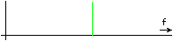 The spectrum of the unmodulated sinewave "carrier" signal 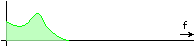 The spectrum of a sample "modulator" signal, say, a speech signal Now, to see what sidebands are, let us have a look at the frequency spectra of some known AM variants: (1.) "Normal" AM, also called double-sideband modulation 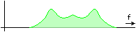 (2.) Double-sideband modulation with suppressed carrier 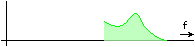 (3.) Single-sideband modulation (with suppressed carrier) While (1.) is easiest to realize with an electronic circuit, and (2.) is easiest for us csounders, namely a simple multiplication of the carrier and the modulator waveform, (3.) is tricky for both analog electronics and digital processing, yet it is the variant we want to have. So, how can it be done? In particular, how do we get rid of the unwanted, in this case the lower, sideband? Three Methods The first method, known as the filter method, is not of much use for us. It suffers signal foldover problems at the frequency boundaries 0 and sr/2, which reduces the usable bandwidth. Small frequency offsets would only be possible with a two step shift procedure: Filter - shift up - filter - shift down - filter. I will leave out the details. The second method, called the phase method, has less bandwidth constraints. It is based on an exotic phase-shifting filter, called Hilbert transformer, which performs a frequency-independent phase shift of 90 degrees. That could be realized with a nonrecursive (FIR) filter of high order, but at the expense of a very high processing load. A different, more efficient concept approximates the phase difference between two signals. It uses two matched recursive (IIR) filters of moderate order; see the The third and least known method, which will be shown here, was found by Donald K. Weaver. This is the block diagram: 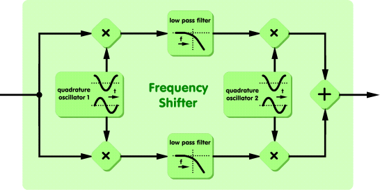 The scheme is somewhat more complicated than method 2 but it only needs an ordinary lowpass filters of moderate order, which can be designed with any standard method. Their phase response is irrelevant. You can choose their type and order according to your needs, the only condition is that you must use a pair of identical ones. Besides the two identical filters mentioned, four multipliers and an adder, it contains two "quadrature oscillators". Now what is that? A quadrature oscillator generates a sine wave and a cosine wave with the same frequency simultaneously. The difference of the frequencies of the two oscillators will be the resulting offset. Without shifting, the oscillators will both operate at sr/4. To achieve a shift, you can adjust either the first or the second oscillator's frequency or both. I will point out the differences later. Development of the Spectra In the spectrum diagrams that follow I have chosen the colours so that they indicate the phase - complementary colours correspond to opposite phases in order to give you a hint which spectral components will cancel each other. 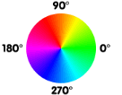 So how does Weaver's method produce the frequency shift? Let us take the following input signal and shift it down: 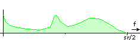 First, the input signal is multiplied (or modulated) with the first oscillator signal. This shifts it up by half the Nyquist frequency = sr/4 and mirrors it: 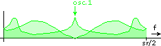 Upper branch 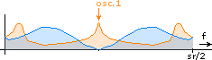 Lower branch Do not worry about all those mirrored and overlapping spectral components - half of them will be cancelled out later. Next, the filters cut the signal off at half the Nyquist frequency: 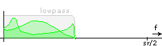 Upper branch 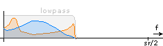 Lower branch Then the signal is multiplied with the second oscillator signal. This shifts it down again by sr/4 plus the offset and mirrors it again: 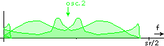 Upper branch 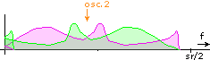 Lower branch The adder is where the mirrored components cancel each other, and the result is the frequency-shifted original: 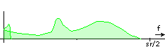 This is how SSB normally behaves. You can see how the lower end of the spectrum is folded around frequency zero. Now look what happens if you leave the second oscillator at sr/4 but adjust the first oscillator. There is a different behaviour at the edge of the spectrum where some spectrum content is shifted off the range [0...sr/2]. Here are all relevant combinations: 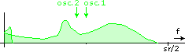 Shift down, normal SSB 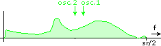 Shift down, other variant 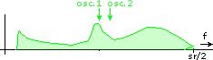 Shift up, normal SSB 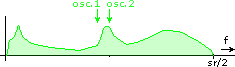 Shift up, other variant I decided to introduce a "shift mode" parameter to "morph" continuously between normal SSB ( I am sure my lowpass filter design can be improved. It was done the "quick and dirty" way with the tools I could find. You may want to design a better one. Go ahead! It should have a cutoff frequency of at most 1/4 of the sampling rate. The better the filter, the better will be the performance, above all in the bass range. The Csound Code for the Frequency Shifter |
||
; useful constant: gisr4 = sr * 0.25 ; global sinewave table for both quadrature oscillators: gisin ftgen 0,0,65536,10,1 ; global filter coefficients for both filters: ; (6th order elliptical filter, fc=0.25sr, in 3 biquad sections) gifc0 = 0.051532459925 gifb01 = 1.0 gifb11 = 1.6375276435 gifb21 = 1.0 gifa01 = 1.0 gifa11 = -0.93027644018 gifa21 = 0.37171017225 gifb02 = 1.0 gifb12 = 0.56037176307 gifb22 = 1.0 gifa02 = 1.0 gifa12 = -0.40320752514 gifa22 = 0.73736786626 gifb03 = 1.0 gifb13 = 0.19165327787 gifb23 = 1.0 gifa03 = 1.0 gifa13 = -0.15398586410 gifa23 = 0.94001488557 |
|||
instr 1 . . . ; input waveform: awin = ..... ; the frequency shift (+/-) in Hertz: kfrqshf = ..... ; the shift mode: 0.0 ... 1.0 kshfmod = ..... ; first quadrature oscillator: ko1frq = gisr4 - (1 - kshfmod) * kfrqshf aqo1r oscil 1.0, ko1frq, gisin, 0.25 ; cosine aqo1i oscil 1.0, ko1frq, gisin, 0.0 ; sine ; second quadrature oscillator: ko2frq = gisr4 + kshfmod * kfrqshf aqo2r oscil 1.0, ko2frq, gisin, 0.25 ; cosine aqo2i oscil 1.0, ko2frq, gisin, 0.0 ; sine ; upper branch: ; first multiplier: awq1r = awin * aqo1r ; lowpass filter: awf1r biquad awq1r, gifb01, gifb11, gifb21, gifa01, gifa11, gifa21 awf2r biquad awf1r, gifb02, gifb12, gifb22, gifa02, gifa12, gifa22 awf3r biquad awf2r, gifb03, gifb13, gifb23, gifa03, gifa13, gifa23 aw1fr = awf3r * gifc0 ; second multiplier: awq2r = aw1fr * aqo2r ; lower branch: ; first multiplier: awq1i = awin * aqo1i ; lowpass filter: awf1i biquad awq1i, gifb01, gifb11, gifb21, gifa01, gifa11, gifa21 awf2i biquad awf1i, gifb02, gifb12, gifb22, gifa02, gifa12, gifa22 awf3i biquad awf2i, gifb03, gifb13, gifb23, gifa03, gifa13, gifa23 aw1fi = awf3i * gifc0 ; second multiplier: awq2i = aw1fi * aqo2i ; summing up: awfs = awq2r + awq2i . . . endin |
|||
| Applications
In the example orchestra, a bandpass-filtered noise pulse with exponential decay is the source signal. It is fed into a simple echo loop which contains the frequency shifter. The left and right stereo outputs tap the beginning and the end of the delay chain, respectively. Only ten notes are played in the score, with different parameters. Listen yourself! Another application could be the frequency modulation of an arbitrary sampled sound, even if it is not coming from an oscillator under your control. You would have to replace If you replace the addition by a subtraction, the spectrum is inverted, that is, mirrored. Furthermore, you can experiment with the filters. For example, make them adjustable. References and Links A Third Method of Generation and Detection of Single-Sideband Signals, Donald K. Weaver Jr., Proc. IRE Dec 1956, pp 1703-1705 |
|||